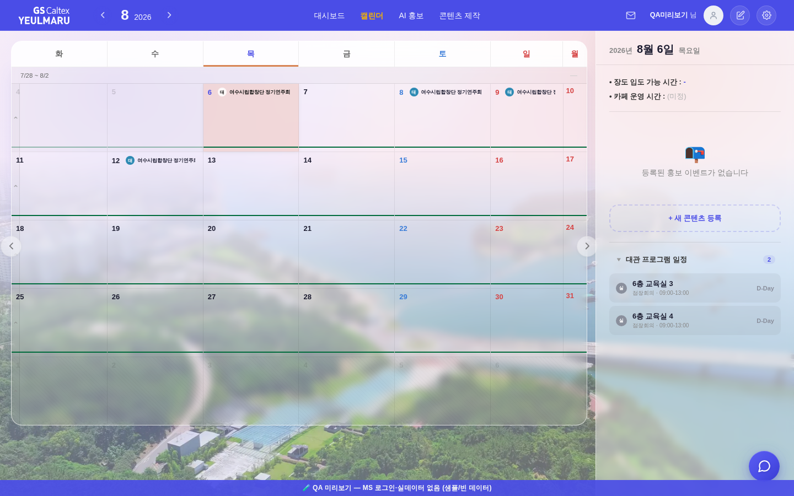

같은 하네스·같은 셀·같은 목데이터로 고치기 전(git HEAD)과 고친 뒤(작업트리)를 각각 부팅해, 캘린더 빈 셀 우클릭 → 「새 콘텐츠 등록」을 실제로 클릭한 직후 화면.
| 위저드 | 머리줄 제목 | Step 본문 글자수 | JS 예외 | |
|---|---|---|---|---|
| 전 (고치기 전) | ❌ 안 열림 | 홍보 신청 | 0 | TypeError: Cannot set properties of null (setting 'textContent') |
| 후 (고친 뒤) | ✅ 열림 | 홍보 신청 | 172 | 0 |
